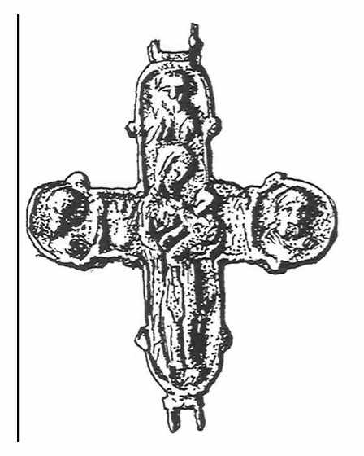

Catalog › CE-0539 · IAH2007-3-1
Valvă inferioară de encolpion cu Maica Domnului Odighitria, Rukomîș (Рис. 3, 1)
sec. XII–XIII (1101–1300) · Rukomîș, regiunea Ternopil, raionul Buciaci, Ucraina · Muzeul Regional de Studii Locale Ternopil (Тернопільський краєзнавчий музей, ТКМ)
single valve of a reliquary cross; c. XII–XIII (1101–1300); found at Rukomîș, regiunea Ternopil, raionul Buciaci, Ucraina; kept at Muzeul Regional de Studii Locale Ternopil (Тернопільський краєзнавчий музей, ТКМ).


Identificare
- Categorie
- Valvă izolată
- Tehnică
- Turnare în relief
- Dimensiuni
- Î 73 × L 68 mm
Iconografie
- Revers
- Maica Domnului cu Pruncul
- Descriere revers
- Valva inferioară, bine păstrată, acoperită cu patină verde. Maica Domnului Odighitria: chip cu nas mic, buze și ochi bine marcați; chipul Pruncului este redat din față, iar corpul din profil; nimburi în jurul capetelor; cutele veșmintelor lungi sunt bine desenate; mâna dreaptă a Maicii, îndoită la cot, este lipită de piept. În stânga inscripția «МР», în dreapta una neclară. În medalionul de sus și în cele laterale sunt sfinți cu păr scurt, nasuri mari, ochi, bărbi și mustăți.
- Inscripții
- МР
Datare și atribuire
- Datare
- sec. XII–XIII (1101–1300)
Descoperire
- Localitate
- Rukomîș
- Regiune
- regiunea Ternopil, raionul Buciaci
- Țară
- Ucraina
- Context
- Necropolă / mormânt
- Coordonate
- 49.0979° N, 25.3853° E
- Precizia locului
- Doar localitatea
Păstrare și referințe
- Colecție
- Muzeul Regional de Studii Locale Ternopil (Тернопільський краєзнавчий музей, ТКМ)
- Bibliografie
- М. Ягодинська, Нові культові речі з давньоруських пам’яток Західного Поділля, în „Матеріали і дослідження з археології Прикарпаття і Волині”, 11, 2007, p. 346–357 [Ягодинська 2007], p. 349, Рис. 3, 1, reprodusă la Рис. 3, 1 (p. 351).
- Figura
- Рис. 3, 1
- Planșe
- Ягодинська 2007, p. 351
- Analogii
- Encolpioane asemănătoare în ținutul Przemyśl (Петегирич 1996, p. 128, fig. 3), în Bulgaria (Дончева-Петкова 1985, p. 42, fig. 2) și la Halici (Пастернак 1998, p. 233, fig. 69, 4).
- Observații
- Valva a fost găsită întâmplător în satul Rukomîș, la săparea fundației unei case, pe locul unui cimitir de pământ rus vechi; nu s-a înregistrat inventar care să dateze piesa, de aceea datarea este largă. Fără număr de inventar. Dimensiuni 7,3×6,8 cm fără ureche. Material: aliaj de cupru, fără precizare suplimentară. Coordonate: ale localității (aproximative), nu date în sursă.
Citare: Corpus Encolpiorum, CE-0539, Valvă inferioară de encolpion cu Maica Domnului Odighitria, Rukomîș (Рис. 3, 1), --root/piese/IAH2007-3-1/ (accesat 2026-10-17).